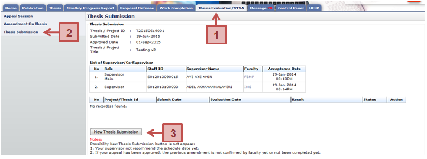

Figure 33: Thesis Submission
Prerequisite
- The Work Completion has been approved by the Schoolboard.
- The Supervisor has recommended the VIVA date scheduled by the Faculty for viva evaluation
Steps
- Click on the Thesis Evaluation/VIVA tab on the Top panel
- Click on the Thesis Submission menu on the Left panel
- System will display the thesis for viva that need to be submitted by user. Click New Thesis Submission to attach and submit the thesis to Supervisor.
Next Action
The student is required to submit the thesis amendment if the Schoolboard request correction to the thesis either it is minor or major correction.
Warning
The system will prompt a notification message if the student proceed without completed the work completion and no evaluation date for VIVA.
Note
None
Created with the Personal Edition of HelpNDoc: Free PDF documentation generator